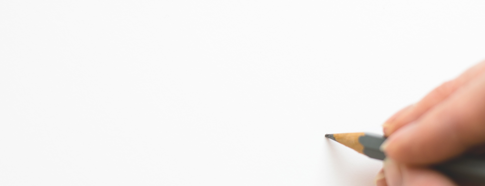
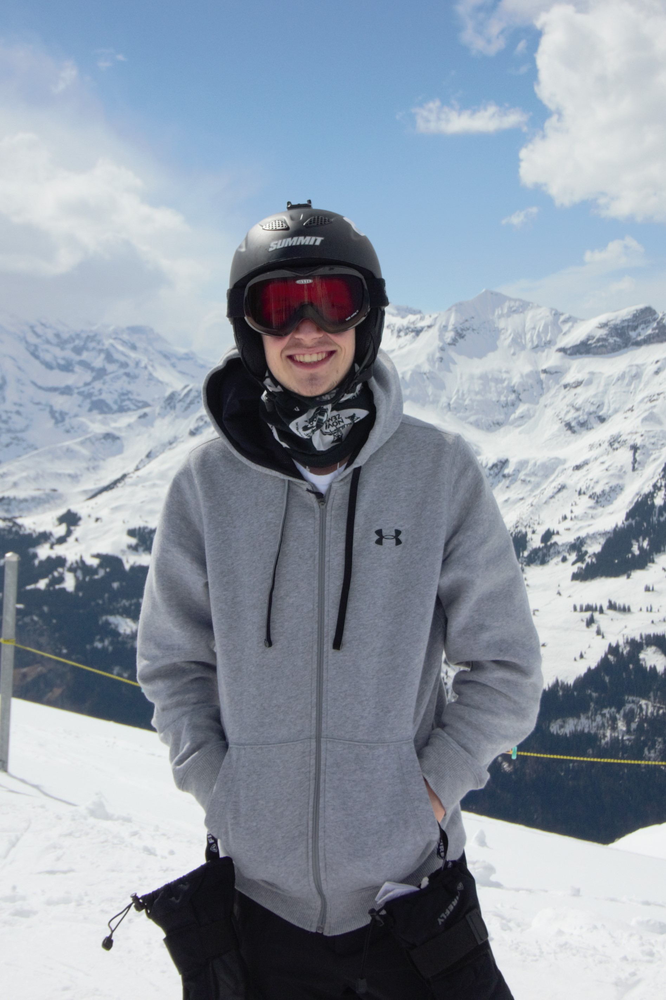
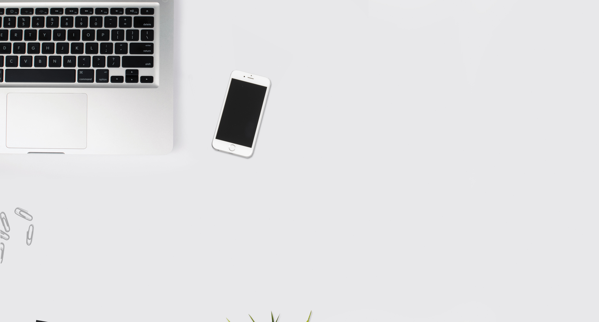

Biografie
In 1998 ben ik geboren als
Rick Cornelis Woldhuis in Haarlem.
Toen ik 3 maanden was ben ik met mijn
familie verhuisd naar Houston, Texas voor 3 jaar.
Daarna verhuisde ik terug naar Haarlem. Daar
ben ik naar een basisschool gegaan en heb
ik een middelbare school opleiding gevolgd, om
uiteindelijk naar de Haagse Hogeschool te gaan
voor een HBO opleiding CMD.
Rick Cornelis Woldhuis in Haarlem.
Toen ik 3 maanden was ben ik met mijn
familie verhuisd naar Houston, Texas voor 3 jaar.
Daarna verhuisde ik terug naar Haarlem. Daar
ben ik naar een basisschool gegaan en heb
ik een middelbare school opleiding gevolgd, om
uiteindelijk naar de Haagse Hogeschool te gaan
voor een HBO opleiding CMD.



Statistieken
Leeftijd: 20 jaar oud
Lengte: 1 meter 81 centimeter
Gesproken talen: Nederlands en Engels
Ervaring in: Adobe Illustrator, Adobe Premiere Pro CC,
Adobe Photoshop, Adobe After Effects, HTML, CSS,
Javascript, Office Pakket.
Lengte: 1 meter 81 centimeter
Gesproken talen: Nederlands en Engels
Ervaring in: Adobe Illustrator, Adobe Premiere Pro CC,
Adobe Photoshop, Adobe After Effects, HTML, CSS,
Javascript, Office Pakket.
Loyaal
Dit is belangrijkste kernwaarde in mijn ogen.Ik blijf loyaal aan de dingen die ik doe en de
personen waarmee ik bevriend raak.
Als een kapitein ga ik ten onder met mijn schip.
Gedisciplineerd
Ik blijf gedisciplineerd doorwerken aan een projecttotdat het af is, het maakt niet uit
hoelang het project daadwerkelijk duurt.
Hardwerkend
Ik blijf hard doorwerken, mijn motto is:"als je iets doet, doe je het goed".
Dit zorgt ervoor dat ik doorga totdat ik tevreden ben
met het resulaat.
Creatief
Ik hou ook van creatief bezig zijn.In mijn vrije tijd schrijf ik verhalen, maak ik muziek
en creëer ik amateurvideo's voor de lol.
Deze creativiteit komt ook voor in de projecten waar ik aan werk.
Humor
In het dagelijkse leven en op het werk moetalles wel leuk blijven. Dit doe ik door altijd grapjes te maken en
door te proberen mensen altijd te laten lachen.
Optimistisch
Op het moment dat de situatie negatief eruit ziet probeer ik altijdaltijd positief te blijven en door te werken. Hierdoor eindigt het project
altijd goed.
Enthousiast
Als ik iets echt leuk vind om te doen blijf ik altijd super enthousiast,gelukkig hou ik ervan om te designen en te programmeren dus blijft
alles leuk.
Gedreven
Ik blijf gedreven door werken aan de projectenwaar ik aan werk. Dit zorgt ervoor dat ik altijd
bereid ben om iets extra's te doen.
Hierdoor zijn de resultaten altijd net iets beter.
Perfectionistisch
Perfectionisme is zowel positief als negatief.Ik wil dat alles perfect is en dat maakt dat ik te lang
met een ding bezig kan zijn.
Soms is goed goed genoeg.
Ambitieus
Terwijl ambitie normaal gesproken altijd goed is, isambitieus zijn in de verkeerde dingen niet goed. Ik
game soms iets teveel en spendeer ook iets teveel
geld aan spullen die ik eigenlijk niet nodig heb.
Resoluut
Ik blijf resoluut doorwerken, dit betekent echter datik ook wel eens is de dingen om me heen vergeet.
Gelukkig heb ik vaak mensen om me heen die
me met de neus op de feiten drukken.
Sarcastisch
Humor hou ik van, ik maak ook veel gebruikvan sarcasme. Sarcasme is alleen vaak niet positief
en kan erg nonchalant en onaardig overkomen.
Risico nemend
Terwijl dit vaak niet als een negatief eigenschap word gezien,kan het wel betekenen dat het verkeerde risico
genomen wordt. Hier moet ik goed op letten.
Nonchalant
Ik kan soms erg nonchalant overkomen, dit bedoel ik nietzo, maar omdat ik eigenwijs ben en vaak sarcastisch doe
krijgen mensen vaak een verkeerd beeld van me.
Ouderwets
Ik vind ouderwetse dingen supergaaf, van retro gamespullentot platen. Maar soms blijf ik iets te vaak hangen in het oud
en moet ik iets meer kijken naar het nieuw.
Eigenwijs
Als ik iets vind blijf ik vaak bij mijn punt.Gelukkig zie ik vandaag de dag mijn fouten sneller in.
Maar soms blijf ik toch iets te lang hangen.

het CMD vakgebied als een ervaren Front End
Developer of Webdesigner. Bij een leuk bedrijf
met een groene en idealistische visie. Ook lijkt
het me leuk als ik bij dit bedrijf andere rollen
kan uitvoeren die niet te maken hebben met
mijn werk, zodat ik altijd blijf leren.
te maken met creatief zijn. Muziek maken,
luisteren/creëeren, verhalen schrijven
en tekenen. Daarnaast hou ik van
gamen, kanoën en sporten.
Ook is een avondje met vrienden zijn
iets dat ik erg leuk vind om te doen.
In de toekomst
Ik zie mijzelf over 5 jaar full-time werkend inhet CMD vakgebied als een ervaren Front End
Developer of Webdesigner. Bij een leuk bedrijf
met een groene en idealistische visie. Ook lijkt
het me leuk als ik bij dit bedrijf andere rollen
kan uitvoeren die niet te maken hebben met
mijn werk, zodat ik altijd blijf leren.
Mijn Favorieten
Films:
Guardians of the Galaxy, The Man from UNCLE en Kingsman.
Boeken
The subtle art of not giving a f*ck en de complete Percy jackson serie.
Muziek
Favoriete band is Young the giant, Favoriete nummer Weird Fishes/Arpeggi van Radiohead. Zie meer muziek in de spotify lijst hiernaast.
Hobby's
Ik heb veel hobby's, veel daarvan hebbente maken met creatief zijn. Muziek maken,
luisteren/creëeren, verhalen schrijven
en tekenen. Daarnaast hou ik van
gamen, kanoën en sporten.
Ook is een avondje met vrienden zijn
iets dat ik erg leuk vind om te doen.